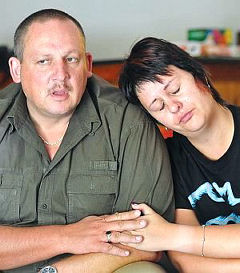
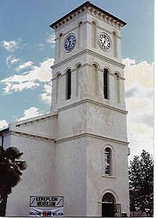
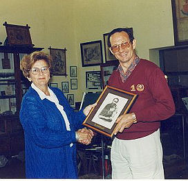
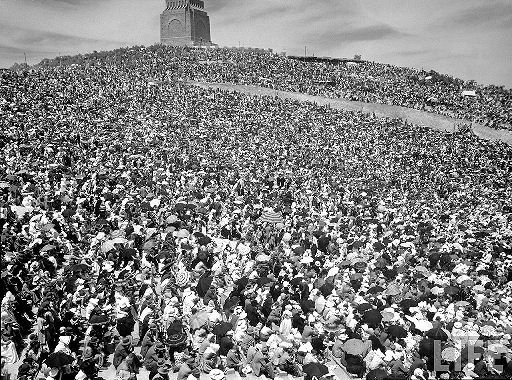
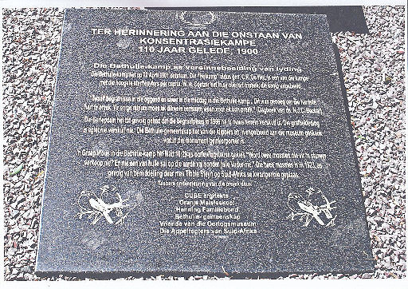
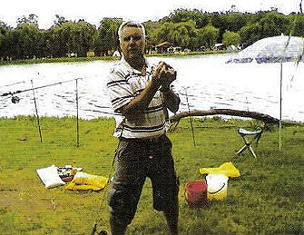
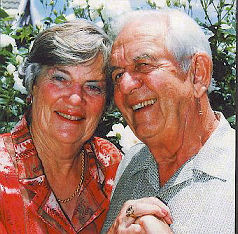
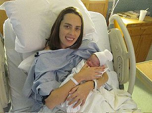
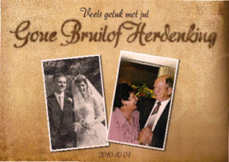

|
Indeks: |

Mev. Amelia Henning *29-12-1973, 'n ma van twee, wat 'n administratiewe klerk by die Mangaung-polisiekantoor en 'n polisie-reservis was, is blykbaar gedurende die nag van 25 November 2010 vermoor.
Haar naakte lyk is die volgende oggend deur twee skoliere in die veld langs Pasteurrylaan in Hospitaalpark, Bloemfontein gekry. Sy is vermoedelik voor haar dood verkrag en het veelvuldige steekwonde in haar bors en gesig gehad.
Polisielede het die gebied naby die spruit in Pasteurrylaan met snuffelhonde vir leidrade gefynkam. Twee skoolseuns van die Dr. Böhmer-skool, het omstreeks 07:30 hier verbygestap toe hulle die vrou se lyk in die gras sien. Een van hulle het na 'n nabygeleë vulstasie gehardloop en die polisie gebel.
Amelia is glo die vorige aand omstreeks 19:30 laas lewend gesien toe sy by haar huis in Fowlerstraat, Hospitaalpark, weg is. Mnr. Coenie Beukes, seun van die eienaar van die tuinwoonstel wat Amelia gehuur het, sê sy het vleis uit hul vrieskas gehaal en gesê sy gaan iewers braai. Sy het nie 'n motor gehad nie en het vermoedelik gestap na waar sy sou braai.
Lt.kol. Thandi Mbambo, provinsiale polisiewoordvoerder, sê die polisie volg leidrade op en hoop om binnekort iemand in verband met die moord in hegtenis te neem. Verskeie artikels, wat vermoedelik aan Amelia behoort het, is op die toneel gevind. Volgens inligting is Amelia se selfoon gister net voor 02:00 die laaste keer gebruik. Die polisie vermoed sy is net ná 02:00 vermoor.
Amelia was tot en met 2005 getroud met b5.c5.d4.e4.f1.g7.h1. Frans Henning *9-1-1971. Frans se huidige vrou, Marisa, sê die dag na Amelia se dood, was die moeilikste dag van haar lewe, want sy moes die nuus van hul ma se dood aan Frans se twee dogters, Megan-Lee (17) en Franschesca (10), oordra. Frans was op daardie stadium uitstedig.

Wie onthou nog die republiekfeeste wat Suid-Afrika elke vyf jaar na 1961, toe die land 'n republiek geword het, gehou het? Die tienjarige fees, wat gedurende 1971 in Kaapstad gehou is, was aan die een kant 'n baie vrolike fees, want die Suid-Afrikaanse ekonomie het op die kruin van die golf gery en al die land se mense, wit, swart en bruin het die voordele daarvan ervaar. Suid-Afrika was op pad om een van die vooruitstrewendste lande in die wêreld te word. Die regering van die dag het hard gewerk om al die mense van Afrika, wat oor milleniums agtergebly het, op te hef, op te voed en op te lei om vir hulself te sorg en hulself te regeer. Terselfertyd het die wit mense verder vooruitgegaan. Almal het in die sukses gedeel.
Aan die ander kant, was die 1971 fees egter ook 'n baie hartseer fees. As deel van die feesvieringe, wat op 31 Mei 1971 in Kaapstad gehou sou word, sou 'n eskader van drie Hawker Siddeley 125 (Mercurius) vliegtuie van die SA Lugmag, aan 'n verbyvlug deelneem. Dit was die eskader wat alle "Baie Belangrike Persone" soos die Staatspresident, kabinetsministers en ander Staatshoofde vervoer het.
b1.c6.d12.e3.f2. Kmdt Lourens Adriaan Francois Henning *17-8-1930 was die bevelvoerder van die eskader en vlieënier van een van die vliegtuie. Op 26 Mei 1971 het die eskader aan 'n oefening vir die verbyvlug deelgeneem. 'n Ongeluk het gebeur en al drie vliegtuie het in formasie in Tafelberg vasgevlieg. Al elf bemanningslede van die drie vliegtuie het op slag gesterf. Lourens Henning en sewe van die ander bemanningslede is hierna in die helde-akker van die Voortrekkerhoogte begraafplaas begrawe. Ongelukkig gaan hierdie begraafplaas en in besonder die helde-akker nou onder die nuwe bewindhebbers totaal ten gronde.
Sedert Olivier Henning in 1980 begin het met navorsing na die Henning families van Suid-Afrika, het hy probeer kontak maak met Lourens se eggenote, Rhona of kinders. Ongelukkig sonder sukses.
Omdat dit hierdie jaar veertig jaar na hierdie tragiese ongeluk is, sou ons die ongeluk graag in herrinnering wou roep met 'n foto van Lourens, met of sonder sy eggenote en kinders. Ongelukkig is dit nie moontlik nie. As daar enige van ons lede is wat enigiets weet van Lourens se twee seuns, Lourens *29-4-1956 en Jan Steyl *5-4-1969 sal ons baie bly wees om kontak met hulle te kan maak. Ons weet ook nie of Rhona Henning nog leef nie. As sy nog leef, sal sy hierdie jaar 81 jaar oud wees. Ongelukkig weet ons ook nie wat Lourens se drie dogters se getroude vanne is nie. Hulle voorname is, Iris *26-1-1954, Anne-Marie *6-4-1957 en Lizette *4-6-1962.


In Aliwal-Noord was die inwoners nog altyd intensief betrokke by die dorpsmuseum. Hulle het 'n museumkomitee verkies, wat, met die samewerking van die munisi-paliteit, die museum beman, befonds en bestuur het. Teen die einde van 1986 het die museum-komitee, met die samewerking van die munisipaliteit met die idee begin rondspeel om 'n uitstalling voor te berei waar die geskiedenis van die dorp weerspieël word.
Vroeg in 1987 het Bondsekretaris Olivier Henning hiervan te hore gekom en samesprekings gevoer met amptenare van die "ou Aliwal-Noord" munisipaliteit en die museumkomitee oor die moontlikheid dat die Henning familie deelneem aan hierdie uitstalling, omdat 'n Henning familie een van die eerste inwoners in die distrik was en verskeie ander Henning families ook een of ander rol in die geskiedenis van die dorp gespeel het. Vir beide partye was dit aanvaarbaar. Die voorstelle wat hier uit voortgespruit het, is deur die stadsraad goedgekeur, met 'n kontrak wat eers teen einde Desember 2013 sou verstryk. Daarna het 'n hartlike verhouding tussen die bestuurskomitee van die Familiebond en die Museumkomitee van die Aliwal-Noord museum bestaan.
Ongelukkig het dinge sedert 1994 drasties verander. Die nuwe munisipale amptenare het 'n negatiewe gesindheid teenoor die museum begin openbaar, omdat dit "witmensgoed" is. Die feit dat die museum ook 'n uitstalling oor die geskiedenis van plaaslike swart mense voorberei het, het hulle gesindheid geensins verander nie. Hier kan ons meld dat Olivier Henning selfs 'n geraamde portret (die enigste wat bestaan) van die middel 19e eeuse Xhosa opperhoof, Kreli aan die museum geskenk het.
Die munisipaliteit was nie meer bereid om vir die instandhouding van die gebou te betaal, of enige ander finansiële bydrae te lewer nie.

Die kurator van die museum, mev Madeleine Joubert het hierdie taak die afgelope 24 jaar vrywillig en sonder vergoeding behartig. As gevolg van die gesindheid van die munisipale amptenare en weens ouderdom en gesondheidsredes het sy besluit genoeg is genoeg en sy gaan op 30 November 2010 uittree. Daar is wel ander lede van die museumkomitee wat deeltyds sal help om die museum aan die gang te hou. Gedurende September 2010 het 'n afvaardiging van die Museum Departement van die Oos-Kaap Provinsie 'n gesprek met mev Joubert gehad, waartydens hulle aangedui het dat hulle nie die kontrak van die inwoners van Aliwal-Noord se museumkomitee, wat op 31 Desember 2013 verstryk, gaan hernu nie. Hulle gaan self die museum begin bedryf. Hulle sal besluit watter uitstallings behou en watter verwyder moet word, asook hoe alle uitstallings moet lyk en wat uitgestal sal word. Hulle het ook aangedui dat hulle eienaarskap oorneem van alles in die museum. Mev Joubert het vir hulle gesê dat alles in die De Wet - en Henning uitstallings, asook verskeie van die ander uitstallings aan hierdie families behoort en NIE staatseiendom is NIE.
Vir ons as familiebond is al hierdie verwikkelinge natuurlik uiters teleurstellend en onrusbarend. Ons weet nie of ons die provinsiale - en munisipale amptenare kan vertrou nie. Dalk gaan haal ons die bobbejaan agter die berg en sal dinge nie drasties verander nie, maar daar is 'n groot kans dat ons aan die kortste ent gaan trek. Ons hoor reeds die dreigement dat hulle ons uitstalling intussen gaan toepak met ander goed.
As ons ons goed moet verwyder - waarheen? waarmee? deur wie? wanneer? Gaan ons 'n ander uitstalling elders probeer voorberei, of stoor ons ons goed tydelik of gaan alles dadelik terug na die mense wat dit geskenk het? Wat van skenkers wat intussen oorlede is? Hoewel mev Joubert nie meer voltyds betrokke sal wees nie, het sy onderneem om ons op hoogte te hou van verwikkelinge.
Indien daar enigiemand is wat enige voorstelle het, laat gerus van u hoor.

Die vraag is: Is lede van die Henning families van Suid-Afrika slegs deel van die Suid-Afrikaanse nasie of behoort hulle ook aan 'n spesifieke kultuurgroep of volk? Of laat ons hierdie besluit oor aan elke individu?
Wat ons nie kan wegredeneer nie, is die feit dat hierdie familie onlosmaaklik deel was van die volk wat oor eeue in Suid-Afrika ontstaan en as die Afrikanervolk bekend geword het.
Hoewel bepaalde individue deesdae miskien nie enige verbondenheid met die Afrikanervolk het of wil hê nie, behoort die Familiebond kultuurgoedere soos monumente, museums, gedenk-tekens wat ook ons erfenis gedenk, te help bewaar.
'Vier jou feesdae, o Juda; betaal jou geloftes" Nahum 1:15
In die "ou dae" het die onderskeie volke in Suid-Afrika self fondse ingesamel om monumente en gedenktekens op te rig. Waar dit in Nasionale belang beskou is, het die regering beheer geneem van so 'n monument of gedenkteken, maar seker gemaak dat 'n beheerraad saamgestel word uit verteenwoordigers van die betrokke "volk". Kort voor die 1994 Algemene Verkiesing het die destydse regering sekere kulturele instellings waaroor die Staat beheer gehad en befonds het, aan die betrokke kultuurgroep of volk se verteenwoordigers terug gehandig. Die Staat sou egter steeds 'n subsidie vir die bestuur en instandhouding verskaf. So het Afrikaner kultuurorganisasies onder andere beheer oor die Voortrekkermonument in Pretoria en die Bloedrivier terrein in Natal verkry en het die Erfenisstigting tot stand gekom.
Afgesien van die Staatsubsidie, was die Erfenisstigting dus verantwoordelik om self fondse te genereer om sy taak uit te voer. In die geval van die Voortrekkermonument (VTM) en die Bloedrivierterrein bedra dit etlike miljoene Rand per jaar, bo-en-behalwe die subsidie wat van die Staat ontvang word - 'n enorme taak!! En dit is bekend dat daar nie veel groot Afrikaner nyweraars en "ryk manne" is nie. Die gebrek aan gemeenskapsbetrokkenheid, en die geneigdheid van volksgenote om maar terug te sit en nie te belê waar hul monde is nie, is besig om 'n al hoe groter uitdaging vir die Erfenisstigting te word.
Intussen het dit vir die Erfenisstigting nodig geword om ook in te gryp by verskeie ander kultuurinstellings, soos die Nasionale Letterkunde Museum en Navorsingsentrum(NALN) in Bloemfontein, die Winburg museum, ABO konsentrasiekampkerkhowe, - burgergrafte en - krygsgevangenekampe, asook verskeie ander monumente, omdat die regering nie sy verpligtinge nakom nie.
Die Erfenisstigting het alle betrokke kultuurorganisasies gepols met die vraag of die VTM en Bloedrivierterrein nie maar weer aan die Staat teruggehandig moet word nie - die ANC Vryheidmonument, reg langs die VTM terrein word juis deur die staat bestuur en instandgehou. Die implikasie hiervan sal wees dat die regering dan die Beheerraad aanstel, wat nie noodwendig lede van die Afrikanervolk sal wees nie. Daar is reeds 'n geneigdheid by die regering om die subsidie aan Afrikanerkultuurgoedere stelselmatig af te skaal en alle beheerrade word gelaai met verteenwoordigers, wat ANC kaders is. Met 'n regering wat ons beslis nie kan vertrou nie, het alle betrokkenes teen hierdie opsie besluit.

Een van die maniere wat ingestel is om fondse te verkry, is om lidmaatskap van die Erfenisstigting toe te ken. Belangstellendes kan vir een van vier kategorieë van lidmaatskap aansoek doen:
A1 - 'n skenking van minstens R50 000.00 plus 'n bedrag van R2 000.00 per jaar daarna
A2 - 'n skenking van R10 000.00 plus R2 000.00 per jaar daarna
B - 'n skenking van R5 000.00 plus R1 000.00 per jaar daarna
C - 'n skenking van R1 000.00 plus R200.00 per jaar daarna.
Die bestuur van die Familiebond het reeds 'n paar maande gelede bygedra tot die oprigting van die Konsentrasiekampmonument in Bloemfontein. Die bestuur het nou weer, na deeglike oorweging, besluit om positief te reageer en om aansoek te doen vir kategorie C lidmaatskap - omdat dit die erfenis van al die Henning families in Suid-Afrika ook herdenk, al sou van ons lede dalk nie hiermee saamstem nie. Daar word gevoel dat kategorie C lidmaatskap bekostigbaar vir die Familiebond is.
Die familiebond se lidmaatskap van die Erfenisstigting plaas egter 'n verantwoordelikheid op al ons lede. As u nie gereeld elke jaar u bydrae vir ons stuur nie, kan ons ook nie ons belofte teenoor die Erfenisstigting nakom nie.

Ons wil dus 'n ernstige beroep op al ons lede doen om in hulle persoonlike hoedanigheid ook aansoek te doen vir lidmaatskap van die Erfenisstigting. 'n Dokument in hierdie verband is ingesluit. U kan ook navraag doen deur 012 326 6770 te skakel of 'n E-pos te stuur na: hub@voortrekkermon.org.za Die Internet webadres is www.voortrekkermon.org.za Kom ons Hennings stel 'n voorbeeld aan ander families deur in groot getalle aan te sluit. Daar is reeds twee individue en die Familiebond betrokke. Kom ons kyk hoeveel ons nog kan byvoeg.
Gelofte (Afrikaans)
Hier staan ons voor die heilige GOD van hemel en aarde om 'n gelofte aan Hom te doen dat as Hy ons sal beskerm en ons vyand in ons hand sal gee, ons die dag en datum elke jaar as 'n dankdag soos 'n sabbat sal deurbring, en dat ons 'n huis tot sy eer sal oprig waar dit Hom behaag, en dat ons ook aan ons kinders sal sê dat hulle met ons daarin moet deel tot nagedagtenis ook vir die opkomende geslagte want die eer van Sy naam sal verheerlik word deur die roem en die eer van oorwinning aan hom te gee.
Gelofte in die oorspronklike 1838 Nederlands
Mijne Broeders en Mede-landgenoten, hier staan wij tans op een ogenblik voor een heilige God van Hemel en aarde om een belofte aan Hem te beloven, als Hij met Zijn bescherming met ons zal wezen, en onze handen zal geven dat wij hem overwinnen, dat wij die dag en datum elk jaar als een verjaardag en een dankdag zoals een Sabbat in Zijn eer zullen doorbrengen; en dat wij een tempel to Zijn eer stichten zullen, waar het Hem zou behagen; end dat wij het ook aan onzen kinderen zullen zeggen, dat zij met ons erin moeten delen, tot gedachtenis ook voor onze opkomende geslachten. Want de ere van Zijn Naam daardoor zal verheelikt worden, dat de roem en eer van overwinning aan Hem zal worden gegeven.


Ons het met leedwese verneem van die afsterwe van twee broers, vyf weke na mekaar. b9.c3.d3.e3.f4.g2.h4. Willem Jacobus Henning *22-11-1952 op 21 Oktober 2010 oorlede. Hy was in die Zuid Afrikaanse Hospitaal vir 'n 3de hartomleidings-operasie. Tydens die operasie het sy hart gaan staan nadat die chirurg die borskas oopgemaak het. Op geen manier kon hulle die hart weer aan die klop kry nie.
Hy het sy eerste hartaanval 20 jaar gelede gehad en kort daarna 'n hartomleiding wat net 3 jaar gehou het. Vroeg 1994 het hy 'n 2de hartomleidingsoperasie gehad wat 16 jaar gehou het. (Willie se broer, Dr Nico Henning, bekende veearts van Centurion, wat vir ons van sy afsterwe laat weet het, het self ook op 10 Mei 1994 in die vroeë oggendure 'n hartaanval gehad. Mandela het later die oggend die eerste swart president van SA geword. Nico het 'n omleidingsoperasie van 3 vate gehad drie dae later op 13 Mei 1994. Syne is dus ook al 16 jaar oud!!)
Die huldigingsdiens is op Donderdag 28 Oktober by die Wonderpark NG Kerk Pretoria-Noord gehou.
Slegs vyf weke later, kry ons die verdere slegte nuus dat Dr Nico se oudste broer, Jan Melchior Henning (b9.c3.d3.e3.f4.g2.h1.)*25-1-1947 gedurende die nag van 27 November 2010 in sy slaap dood is. Nico het die vorige aand nog met hom oor die telefoon gesels en gegrap. Die begrafnis het op 1 Desember 2010 plaasgevind.
Jan het 'n aantal jare gelede na baie hartprobleme 'n omleidingsoperasie gehad. Alles het goed gegaan totdat hy so 5/ 6 maande gelede in 'n motor ongeluk met 'n Taxi was, wat oor 'n rooi verkeerslig gejaag en sy motor op die linkersy getref het. Die impak het die linker sitplek na regs gestamp wat weer al sy ribbes aan die linkerkant gebreek en sy linker long gebars het. Gedurende die eerste 2 weke het sy lewe aan 'n draadjie gehang en was hy in 'n gedwonge koma gehou tot die long genees het en hulle hom kon afhaal van die longmasjien. Gedurende daardie tyd moes hulle meer as 20 keer sy hart met elektrisiteit skok om weer reg te klop. Nico sê dat Jan, na sy sin, heeltemal te gou terug werk toe is. Hy was 'n ketelmaker.
Ons wil graag die familiebond se innige simpatie met Dr Nico en sy familie betuig met die verlies van twee broers in so 'n kort rukkie. Ons kon ongelukkig nie betyds 'n foto van Jan Henning bekom nie.

Dan het ons ook verneem dat b1.c6.d14.e4.f1. Christiaan Rudolph Jacobus (Chris) Henning *19-12-1924 ook op 27 November 2010 oorlede is. Chris en sy vrou Winnie (gebore Serfontein) was Erelede van die Familiebond. Hulle sou op 19 Desember 2010 62 jaar lank getroud gewees het. Teen die einde van sy lewe het hy baie mediese probleme gehad.
Chris en Winnie het in die Westerbloem Aftree-oord, Bloemfontein gewoon. Hulle het net een dogter, Santi, twee kleinseuns en een kleindogter, met ses agterklein-dogters en een agterkleinseun.

Ons het die volgende donasies van R300.00 en meer oor die afgelope drie maande ontvang
TJ (Tjaart) Henning van Sinoville, Pretoria, 'n Lewenslange lid - R1 000.00
CB (Neels) Henning van Tampa, VSA, 'n Lewenslange lid - R1 000.00
Ds BS (Bjarne) Fowels van Hjelmeland, Noorweë, 'n Lewenslange lid - R1 000.00
CR (Chris) Henning van Tsumeb, Namibië, 'n Lewenslange lid - R600.00
WP (Werner) Henning van Cresta, Johannesburg - R500.00
Mev MM (Marlene) Page van Pietersburg - R400.00
Mev W (Wiena) Wilkinson van Paarl - R300.00
PB (Pieter) Henning van Sinoville, Pretoria - R300.00
Dankie ook aan Jan Andries - en Jan Hendrik Henning en Henning Pieterse wat voortgaan om maandeliks per debietorder 'n bydrae te lewer asook al die ander mense wat hul bydraes vir 2011 aangestuur het. Dit maak dat die Familiebond kan voortgaan om die Henning familie tot diens te wees. Ongelukkig is daar nog verskeie families wat nog nie hulle bydraes vir 2011 aangestuur het nie.
Weens gebrek aan spasie staan die berig oor die 2010 matrikulante oor tot die volgende Nuusbrief.


Op 17 Oktober 2010 is daar vir die tweede keer 'n Henning baba in Durham, Noord Carolina, in die VSA gebore. Dit was Allison Susan Henning, dogtertjie van b1.c6.d3.e11.f3.g1.h1. Prof Reyco Henning *13-9-1975 en sy vrou, Dr Cara Henning (gebore Cartwright).
Allison is Reyco en Cara se tweede kind.


b5.c1.d3.e1.f7.g4 Hermanus Francois (Herman) Henning en sy vrou, Ena is op 1 Oktober 1960 in Pietermaritzburg getroud. Hul kinders, Marlize en Lizelle was bevoorreg om op 1 Oktober 2010 saam met hulle hul goue bruilof te vier.
Herman hou hom besig met takies in en om die huis en raak so verdiep in sy rugby dat dit party Saterdae lyk of hy saam met die Blou Bulle of Springbokke rugby speel. Hy lees graag en sy belangstelling is veral in rugby en die Anglo Boereoorlog geskiedenis. Nadat die dokter ons in Oktober 2009 meegedeel het dat hy nie weer sal herstel na sy tweede pasaangeer nie, en ons hom tuis moes versorg, het hy gewys dat die Hennings nie maklik gaan lê nie en het hy wonderbaarlik herstel. Ena word op 19 Maart 2011 70 jaar oud en is nog 'n kranige tennisspeler en bak gereeld beskuit met haar aartappel suurdeeg plantjie (soos ouma dit gedoen het). Hulle is voorwaar wonderlike ouers wat altyd met raad en daad almal bystaan.
Die gedenkkaartjie wat uitgegee is met Herman en Ena Henning se goue Bruilof fees